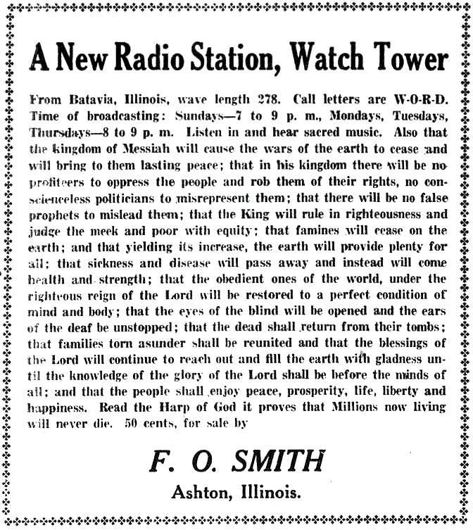

1994 was Harold Camping's date, not theirs
Don't useThe Witness answer holds up. Do not lead with this one.
The mix-up
Some people say the Watchtower predicted the end of the world in 1994. It did not.
No Watchtower publication ever set that date.
Whose date it was
The 1994 date belongs to Harold Camping of Family Radio. He was a Reformed broadcaster with no link to the Watchtower.
His book 1994? came out in 1992 and put Christ's return in September of that year.
He failed again, famously, with May 21, 2011.
Why the two get confused
Both made dated predictions. Both were mocked in the same news cycles.
That is the whole connection.
What the real record is
Their own dated predictions are 1878, 1881, 1914, 1918, 1925 and 1975. Then there is the 1914 generation, which expired.
All of it is documented in their own books. It needs no padding.
After 1975 the Society stopped publishing dates and moved to the undated overlapping generation, because dated predictions had become a liability.
How strong is this argument?
Do not use this one. A Witness can correct you truthfully, and that hands them the moral high ground.
It also proves the story they are told about critics. Keep this entry as a guardrail for yourself.
What to say
"That 1994 date was Harold Camping, not your organization. The dates I want to ask about are 1925 and 1975."


How they answer this — at its strongest
No answer is needed: the Watchtower never set 1994, and a Witness will say so.
Not applicable. No Watchtower defense is needed here. The Watchtower never made the claim. A Witness who hears 1994 will deny it, and will be right to.
The verdict
Do not use this one. It was Harold Camping's date, and a Witness can prove it.
Flagged avoid. Pinning Camping's date on the Watchtower is a plain error of fact. It lets a Witness correct you truthfully, which is the worst dynamic you can create. It also proves the story members are told, that critics spread lies.
The real record is stronger than any borrowed one. Six dated claims in their own print, and not one came true. Keep this entry as a guardrail for our own writing.
Sources
- TIME — Top 10 end-of-world predictions: Harold Camping, 1994
- CRI — A Summary Critique of 1994? by Harold Camping
- Christianity Today — Camping Misses End of World (1994)